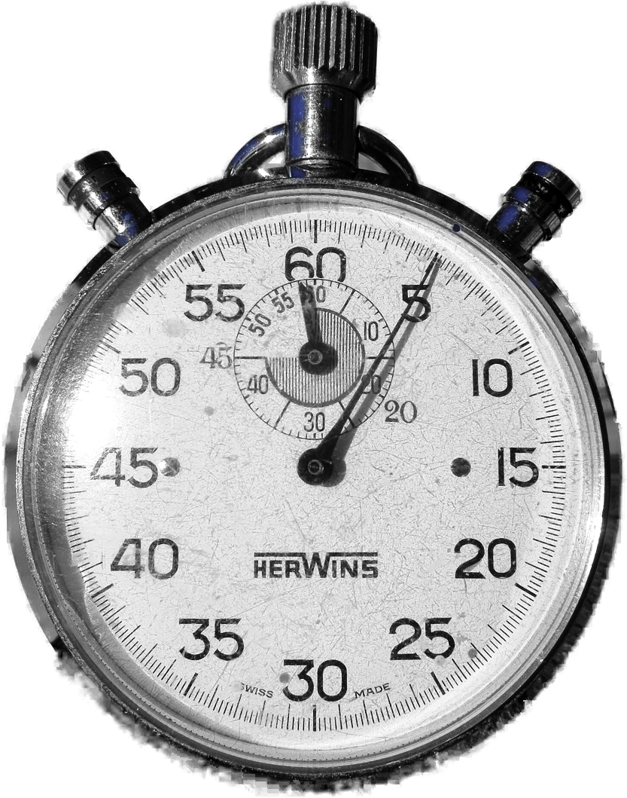

5 A LA VEZ

Cronómetro · foto: R. Henrik Nilsson, CC BY 4.0, modificada
pista y fichas: recreación
Grinnell College · foto: Mattsjc, CC BY 4.0, modificada
GRINNELL · 1925
Drake–Grinnell · The Des Moines Register, 1925 · dominio público
GRINNELL · 2012
Jack Taylor tira un triple
foto: Holyhill12, CC BY-SA 4.0
BANDEJA LIBRE
pista: recreación
minutos por partido · recreación
MIDWEST CONFERENCE
clasificación y trofeo: recreación
Fotos: Mattsjc (CC BY 4.0) · The Des Moines Register (dominio público)
Holyhill12 (CC BY-SA 4.0) · R. Henrik Nilsson (CC BY 4.0) · vía Wikimedia Commons, modificadas
Pista, pizarra, minutos, clasificación y trofeo: recreación